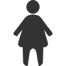

软件在教育、医疗、环保、公共服务等民生领域都有着广泛的应用
软件在教育、医疗、环保、公共服务等民生领域都有着广泛的应用
民生

就业
就业形势
截至2025年，中国的就业形势呈现出一定的特点和挑战：
稳定和扩大就业的任务繁重
面对应届毕业生数量庞大（2025年应届高校毕业生达到1222万人）
脱贫人口务工规模需要维持在3000万以上
大量农村转移劳动力的就业需求，压力依然存在
结构性矛盾突出
我国就业市场存在着明显的结构性矛盾
一方面，某些行业或地区可能面临人才短缺的问题
另一方面，求职者的能力与市场需求之间可能存在不匹配的情况，特别是在新兴产业和服务业领域
青年就业问题
对于年轻人而言，找到合适的工作仍然是一个难题
尤其是在经济转型期，传统产业对劳动力的需求减少
而新兴行业所需的技能和知识尚未被广泛掌握